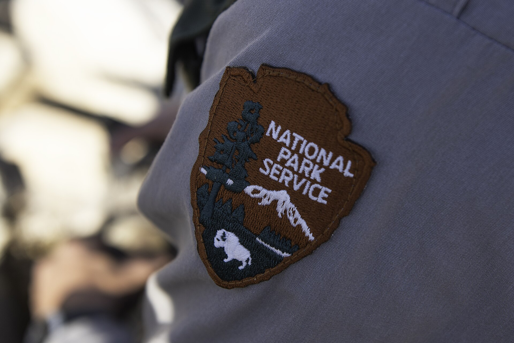

第 15 章
保护区里的枪声
这份计划书摊在副驾驶座上，封面是浅灰蓝色，左上角有国家公园管理局的箭头徽，右下角一串内部编号。标题里“入侵”两个字被加粗了。不是“野猪管理计划”，也不是“野猪控制计划”，是“入侵物

美国国家公园管理局（NPS）徽标
图源：维基共享资源 · Joshua Tree National Park · Public domain
种管理计划”。
封面上没有猪的照片，没有红外相机拍到的拱食画面，只有一张湿地草原航拍图：几条灰白色的浅水通道被一片深绿色切断。图注一行小字，写着“受影响区域，2017年至今”。
计划正文第一段写得很克制。它先不写猪。它谈“资源管理性行动”的定义，再谈国家公园管理局的使命：“保存自然与文化遗产不受损害地留给后代”。
这句话在文件里出现三次，分别在导言、行动授权和附录合规审查部分。每次引用后，都接一段关于外来物种干扰的描述。
猪直到第四页才出现。文件称野猪是园区内“最广泛分布的非本地大型脊椎动物”，其活动“可能导致土壤结构改变、本土植物群落退化和水鸟筑巢地破坏”。
文件没有给“归化”下定义，也没有解释为什么一个在佛罗里达半岛存在数百年的动物，在此页被划进“入侵”范畴。它只列出一组观察数据，然后给出授权：在公园边界内指定区域，由认证人员使用夜视设备和消音武器，对野猪实施选择性清除。
没人会把这份文件从头到尾读完再行动。生物学家读的是附录D，那份写着他姓名缩写的任务授权页，以及附录F，那张标着红点的行动地图。
他把工作证别在衬衫口袋，检查步枪保险，再把枪放进枪箱。那一刻，他做的不是生物学判断。他做的是一道行政程序题：在受保护的土地上，谁有权决定一个物种的归属？答案预先印在文件里，等着他签字。
佛罗里达大沼泽地的夜比内陆来得早。太阳一掉到柏树带后面，天就迅速从灰蓝变成暗绿，然后变黑。
他开着公园的白色皮卡沿一条碎石巡逻路向南。路两侧先是干燥的松林，接着是低矮的锯叶棕。再往里走，地面开始发亮，水从路两侧渗上来，形成一层薄薄的反光。车灯照过去，能看见浅水下面的泥底，泥底上有一些新鲜的翻痕。
翻痕边缘还带着水，没有被风抹平，也没有被螃蟹重新修整。他在距离目标区域大约半公里的地方停车，关掉引擎。车灯熄灭后，天并不是全黑。月亮还在上弦，薄薄一层光落在水面上，把那些翻痕照成一条条白色的疤。
他取出枪箱。枪是配发的，一支栓动步枪，枪管上拧着消音器。夜视仪挂在枪身上方，电池是新的。他没有戴护耳。消音器会抹掉很大一部分声响，剩下的声音会被风和水声吃掉。
他沿着巡逻路步行，脚下是碎石和沙，再往外是水。水不深，刚过脚踝。他走得很慢。
夜视仪打开的时候，整个视野变成一片绿色。树是发亮的绿，水面是黑绿，天空在镜头里变成灰绿色。他开始寻找那些会动的东西。青蛙的眼睛在夜视仪里会亮。鳄鱼的眼睛也会亮，但它们贴着水面，像两粒琥珀。野猪不会亮。野猪在夜视仪里是一个实心的形状，头低着，肩胛骨把体毛撑成一个小小的坡。如果它们不动，它们就像一块石头，或者一段从水里抬起来的树干。他找到了它们。有五头，或者六头。
它们聚集在一处浅洼地里，那里原是一片锯齿草和星兰的混杂生境。现在草叶被掀翻了，根朝上，白花花地铺了一地。猪的吻部在泥里拱。从夜视仪里看，那些吻部像五六个黑色的锤子，一下一下砸进地面。泥浆从它们的嘴角溢出来，又滴回地里。有一头最大的站在左侧，肩高过了其余几头。它不拱，只是站着，耳朵前后转。空气里有泥和腐叶的气味，还混着一股这些动物身上特有的酸味，像发酵过的草和湿毛。
他没有再靠近。他趴下来，把枪架在前臂上，调了调夜视仪的焦距。八十米。风向偏南，从猪那边吹向他。这是一个干净的条件。
他等了一会儿。等待本身也是程序的一部分。计划里写的是“确认目标行为”，也就是说，他必须看到它们在拱食，在翻地面，在破坏生境。如果它们只是走过，或者睡觉，或者交配，他没有理由扣动扳机。
这是一次资源管理性射杀，不是开放季节的狩猎。猎手可以根据一个物种的法定身份开枪，他不能。他必须看见猪在做文件里描述的那种事。他看见了。
有一头，体型中等，正把吻部插进一丛星兰的根部，往上掀。那个动作很慢，很用力，泥土从两侧翻起来，连同白色的根须。旁边另一头走过去，用鼻子把掀开的土又拱散。
他松开保险。第一声枪响很轻。像是有人用湿毛巾拍了一下手掌。最大的那头倒了。其余几头抬起头，愣了一两秒。第二声，又倒了一头，是正在拱星兰根部的那头。
剩下的猪开始跑。它们没有朝一个方向跑，而是四散，溅起一片水花。第三声。一头小一点的栽进水里，又挣扎着站起来，向前冲了几步，倒了。第四声。最后一头已经跑到树线附近，只有半个身子出现在镜头里。他等它慢下来。它确实慢了，在树根前顿了一下。第四声。
水面重新安静下来。风还在吹，草叶在轻轻响。夜视仪里，那几头猪的轮廓已经不动了。
他数了数：四头。最大的一头差不多有一百六十磅。他没有立刻过去。他又等了十分钟，仍然保持着原来的姿势，看那些倒下的身体。有一两下，他看见一条腿抽动，然后停下。夜视仪里，那具最大的躯干正在慢慢变冷。变冷是看不见的。
但你能感觉到，那个形状在慢慢变成地面的一部分，变成了泥，变成了水。他站起来，把步枪关了保险，背到肩上。他打开手电。
地面的破坏比他想象的要大。那片浅洼地几乎认不出来了。原本低矮的植物群落被翻得像犁过一遍，土壤被拱出了七八厘米深的沟。几株星兰被连根掀在一边，根球上还挂着粉白色的花苞。泥水渗进了那些洞，里面已经积了一层发红的水。
他走到第一头猪旁边。那是一头母猪，腹部微微鼓着。它的眼睛半睁，口鼻陷在泥里。第二头也是母猪。第三头是公猪，体型小一些，两颗下犬齿从唇边露了出来，大约有三厘米。第四头在树线边上，是一头未成年的猪，肩上有明显的褐色条纹，那是幼体还没褪干净的毛色。
他把它们拖到一片高一点草地上。拖曳在泥地里很费劲，但他必须把它们从敏感区域移出来，以免尸体腐烂后进一步改变土壤和水质。他从皮卡上取来折叠解剖垫、手套、采样管、镊子、小刀和一台平板。解剖垫铺在草地上。他先称了重量，用弹簧秤，精确到半公斤。最大的一头是七十四公斤。
他记录：编号，性别，估龄，体重，地点，时间，天气。然后是取样。他从每头猪的胃部开始。
这是一种有条不紊的工作。刀沿着腹中线切开。胃很薄，胀着。他划开胃壁，里面的东西流出来，落在垫子上。他用手电照着，用镊子一点一点分拣。
第一头猪的胃里主要是植物的根和纤维。有破碎的兰科植物根茎，呈半透明的白色。有锯叶棕的果实，硬壳已经裂开。有几片螃蟹壳，边缘破碎，说明这头猪在近岸的泥里翻到过一只青蟹。还有塑料。一小块黑色的塑料碎片，大约一厘米见方，边缘圆滑，像是已经在小肠里走了一段又反刍回来，或者是在胃里被酸性液体磨圆了。他把这些一样一样放进标了号的采样管里。
第二头猪的胃里没有塑料。它吃了很多昆虫，鞘翅，还有一些已经消化成糊状的东西。第三头猪的胃里是一团绿色的草浆，混着一截残缺的蜥蜴尾巴。第四头猪的胃比较空，只有一些泥和细沙。它最后吃的东西可能就是泥。
他打开平板，把数据录进去。表格是一份固定格式的调查表，标题是“组织样本采集记录”。
下面有几十个字段：胃内容物、胆囊颜色、皮下脂肪厚度、肝表面、脾脏长度、寄生虫数量。他在“胃内容物”一栏里写了一段简短而精确的描述。这样一段描述，最终会进入一篇论文。论文讨论的是野猪干扰对湿地土壤碳储量的影响。它会引用这些胃内容物，把它们作为“杂食性食腐行为导致湿地食物网营养级联改变”的证据。论文会经过多轮修改，会提交给一份期刊，会送出去外审。那时候，这里的土壤已经被翻过新一轮了。
他继续取样。牙齿是必要的。他把每头猪的下颌骨卸下来，用力掰开，看臼齿。这些臼齿的表面有细微的脊和沟。出生第一年长出的第一臼齿已经磨平，平坦得像一块旧石子。第二臼齿正在磨，齿冠上的纹路还清楚。第三臼齿只出了一半，包在牙床里，顶端刚刚裂开。他用牙科镜照了照，判断那头未成年猪的年龄在十一个月左右，上下误差不超过三个月。
估龄靠的是磨损线。磨损线不会说谎，但它也不准。它会告诉你一个大致范围，一个世代。这里没有年龄的真实数字，只有被磨出来的痕迹。
他把牙齿装进袋子，标记。然后他切开皮下，量了脂肪厚度。最厚的一头是四点二厘米，最薄的一头只有零点八厘米。这片沼泽给了它们足够多的食物，但不够均匀。
寄生虫取样用的是一个透明小瓶。他从小肠和大肠交界处切开，看内容物。线虫，很多线虫，细如发丝。他数了其中一厘米见方的肠段，估算了密度。
这就是一头猪身上的世界：鳞片样的塑料，碎裂的蟹壳，兰花的根，还有数不清的线虫。
他合上盖子。所有这些样本都要放进一个带冰袋的箱子里，第二天早晨由另一位技术员送回实验室。样本不会立刻给出一篇文章。它会先进入冰箱，再进入离心机，再进入质谱仪。也许最终会变成一张图表，一行回归方程，一个关于“疫病传播风险”或者“土壤氮输入”的结论。
他把四具尸体留在原地，盖上防水布，用两块石头压住。计划允许这样做。尸体将被留在现场，成为食腐动物的食物，或者慢慢分解。带走它们没有任何意义。它们本来就不是食物，在那片公园的土地上，它们不是资源。它们也不是害兽。
它们是一种被授权清除的对象，清除的终点就是留在地上，变成氮，变成磷，变成土壤里的一部分。而土壤也已经被它们翻过了一遍。
凌晨三点，他回到皮卡上。暖风从车窗缝里灌进来，带着咸味和霉味。他的手套上粘着泥，指尖还有胃液的酸气。
他把采样箱放在副驾驶座上，在膝盖上摊开行动报告。报告的格式很简洁：行动编号，任务区域，开始时间，结束时间，天气，风向，目标数，清除数，备注。他在“清除数”一栏写了“4”。
但他的笔在备注栏上停了一下。以前这一栏经常是空的，或者写着“无异常”。他想了想，写了几个字：目标区域预计种群恢复时间：少于十二个月。
这句话是估计，不是测量。在他的同行已经收集的数据里，大沼泽地国家公园的野猪种群在受到局部清除之后，会在一个季节到一年之间重新填满原来的空间。有时是邻近的家庭群迁移过来，有时是躲过射杀的个体迅速扩大活动范围。有些年份，洪水会把猪赶到更小的干地上，让它们的密度在几个月内成倍上升。
种群恢复时间少于十二个月，意味着他们今夜做的这件事，在气候不发生剧变的前提下，将在明年春天被完全抹平。
文件里没有要求他写这个。但一个负责任的观察员会写。他没有在报告里写另一件事。他没有写那四头猪里有两头是母猪，其中一头可能已经受孕。这个信息自然会从解剖数据中出来，只是报告不体现。
他也没有写塑料碎片。那是生态学的另一个问题，不属于这次行动的范围。他只在“胃内容物”那一栏如实记下了。
它们最后会进入论文。论文也许会在计划修订之前发表，也许不会。天在四点半开始变亮。不是日出，是一种灰蓝色的薄明。树林的轮廓重新出现，水面从黑色变成铁灰色。他发动车子，沿巡逻路向北开。车灯照出一小段路，再远一点的地方又沉进暗里。
他从后视镜看到一个东西，在刚刚清理过的那片浅洼地附近。一个暗色的影子从树线边缘走进空地里，头低着，步态不紧不慢。可能是一头新的猪。它可能是从南边穿过红树林过来的，也可能一直就在附近，只是没在夜视仪的视野里。
它走到先前那个位置，停下来，用鼻子嗅了嗅那片被翻过的地和被拖曳过的痕迹，然后开始拱。天足够亮了，他看得见它掀起的泥。它和昨夜清除掉的四头几乎没有区别。同样的动作，同样的肩部线条，同样的把世界翻过来的耐心。在后视镜里，它变得很小，最后融进灰绿色的背景里。
他没有停车。车继续向北，经过柏树带，经过巡逻路与主公路的交口。路在那里变宽，铺了沥青。
他把车开进公园管理局的维修区，倒进停车位，熄火。采样箱还冒着凉气。他关掉引擎以后，外面很静。一只鹗从头顶掠过，嘴里叼着一条银白色的鱼。
接下来，他要做的只是把报告交上去。然后是样本交接单。然后是他自己的野外记录本。他会在今天的页面上写下日期、地点、人数、清除数、备注。他不知道这份记录以后会被谁读到。也许没有人会专门去读。许多这样的记录只是被归档，放在一个箱子或者一个数据库里，成为某个更大叙事的注脚。
他站在停车场边缘，没有立刻走向皮卡。维修区的铁皮工具房在太阳下反着白亮的光，旁边一辆废弃的平底船倒扣在草里，船底上有一层干掉的泥。他把手套摘下来，指尖的橡胶薄膜被汗浸得发皱。手套内层还残留着胃液的酸味，混着一点屠宰后的腥气。
他没有把报告直接塞进信箱，而是拿在手里又看了一遍。表格上的“清除数：4”写得很轻，纸面上有他掌根压出的汗渍。备注栏里那行字比正文更小，但还看得清：“目标区域预计种群恢复时间：少于十二个月。”
他想了想，把“少于”两个字圈掉，改成“预计”。然后又把“预计”划掉，恢复成原来的样子。
这种反复没有任何意义，表格不会因为一个词的变化而多出任何解释空间。它只是让他感到，自己正在填写一种制度的默认值：行动必须被记录，记录必须显得确定，而确定本身并不需要被验证。
他把报告折好，塞进信封，投进维修区门口的信箱。信箱上喷着“管理局内部邮件”几个白漆字，漆皮已经剥落。
在他投下信封的一瞬间，他想起解剖时那些胃内容物被分装进采样管的顺序。它们贴着标签，写着样本号、日期和位置。那些标签上的字比报告上的备注更小，却决定着这些数据能否进入后续的分析流程。
可没有一张标签写着“来源不明”。没有一张标签写着“管理行为滞后于生态过程”。这些信息必须留在表格之外，留在备注栏与个人判断的缝隙里。
他后来站在皮卡旁，用指甲抠掉方向盘上的一块干泥。那块泥是昨夜从靴子上带上去的，颜色暗红，像一片缩小的沼泽。
他想起幼猪肩上的褐色条纹。那些条纹在解剖灯下已经不明显了，因为毛发被泥浆结成束。但他记得它们还在时，会让这头动物看起来像一片会移动的枯叶。
条纹是幼体保护色，通常在四个月后褪去。这头猪的条纹尚在，意味着它出生在最近一个繁殖季。
而它的胃几乎是空的，只有泥和沙。这说明它在死前已经有一段时间没有获得充足的食物。
计划的逻辑里，这种食物短缺可以被解读为控制行动的效果。但他知道，那可能只是因为它太小，竞争不过成年个体，或者因为洪水把它赶到了这块更贫瘠的浅洼地。这类个体会在夜里回到空无一物的土地上，啃食泥土里的细根和甲虫幼虫。它们不是生态破坏的源头，也不是恢复的目标。它们只是种群边缘的填充者，恰好出现在一条被划为“指定区域”的边界之内。
正是这种边缘填充让他感到那行备注的重量。他估计的种群恢复时间，并不是基于这头幼猪的胃，也不只是基于那四具尸体的性别和年龄。它来自一种更日常的经验：每次局部清除后，最先回到空地的往往是这种边缘个体。它们跟随着翻过的泥土气味，跟随着被翻出来的昆虫和根茎，把那些被认定为“破坏”的痕迹当作食物线索。于是，清除制造的空缺反而成了一种吸引。计划里没有这种反馈回路的条目。它只是把每一次进入都视为一次独立事件，一次“目标行为”的确认。而猪不需要确认。
他把那块干泥从方向盘上抠下来，扔进车外的草丛。泥块碎开，落在几片锯叶棕的枯叶上，发出很轻的声音。他抬头看了一眼维修区外的巡逻路。路肩处有几处新的翻痕，从草坡一直延伸到排水沟边。那些翻痕很新鲜，边缘的泥还带着水光。可能是昨晚他离开后出现的，也可能是更早。它们没有停留在“指定区域”内，而是沿着路肩向外扩展，跨过了一条看不见的线。那条线只存在于文件里。
但在写备注的时候，他已经写下了一个无法被归档的事实：这块被保护的土地上，猪的数量不会因为昨夜少掉四头而改变。这个数字只是表格里的一个格子，它会被月度报表、年度报告、五年规划不断汇总。而那块地上的拱痕，会在下一年重新出现。
报告交掉之后，他把枪放回枪库，签了归还登记。枪管还是温的。管理员接过去，擦了擦，挂回架子上。
没有人问昨夜进展如何。这意味着它进行得和计划中的一样。没有意外，没有例外。那些表格上所有的字段都填满了。
他交了钥匙，走出那栋低矮的灰白色建筑。太阳已经升高了，很热。停车场的沥青上浮着一层油光。
他想到那份入侵物种管理计划的封面，那张航拍图上被切断的湿地通道。他从来没弄明白，那些灰白色的浅水通道是运河，是自然形成的洼地，还是野猪拱出来的水路。它们是公园里最普遍的地貌之一，早就被编进了地图，成了“原始景观”的一部分。人们测量它，保护它，把它视为这片生态系统的血管。
可那些“血管”的源头，可能只是一群猪在过去的某一年里，一遍又一遍走出来的路。在这个意义上，它们已经被管理了几百年。他走向自己的皮卡，看了一眼后座上的防水布，上面还沾着泥。他想起那个黎明时分重新出现在后视镜里的影子。它已经在拱了。它拱的地方，正是昨夜被他清理过的那片浅洼地。它不知道这里有边界；它不知道这里的管理计划；它也不知道它自己的身份，在这个公园的文件里叫“入侵”，在猎手的账本里叫“资源”，在某些生态学家那里可能叫“归化种”。它只是继续用它的身体，在同样的地方，做着同样的事情。这就是问题所在。